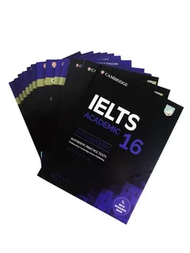

The Official Cambridge Guide to IELTS
The Official Cambridge Guide to IELTS is a comprehensive resource designed to help test-takers achieve their desired band score. It provides detailed explanations of all four sections of the test, including Listening, Reading, Writing, and Speaking. The book is authored by the people who actually write the exam, ensuring the highest quality of practice materials. Through its step-by-step guidance, learners can build both their language skills and test-taking strategies. Furthermore, it contains multiple full-length practice tests to simulate the real exam experience.
Key Facts
- Covers both Academic and General Training modules.
- Includes 8 official full-length practice tests.
- Provides downloadable audio and video resources.
- Contains detailed answers and examiner comments.
Important Publication Dates
- 2014: First edition published.
- 2015: Digital app companion released.
- 2018: Updated audio resources made available online.
- 2021: Revised content for modern test formats.

Reviews and Resources
This book is an essential tool for anyone serious about passing the IELTS exam with a high score.
— English Language Teachers Association
Watch this video to learn more about the speaking test format:
For more official information, visit the Official IELTS Website.